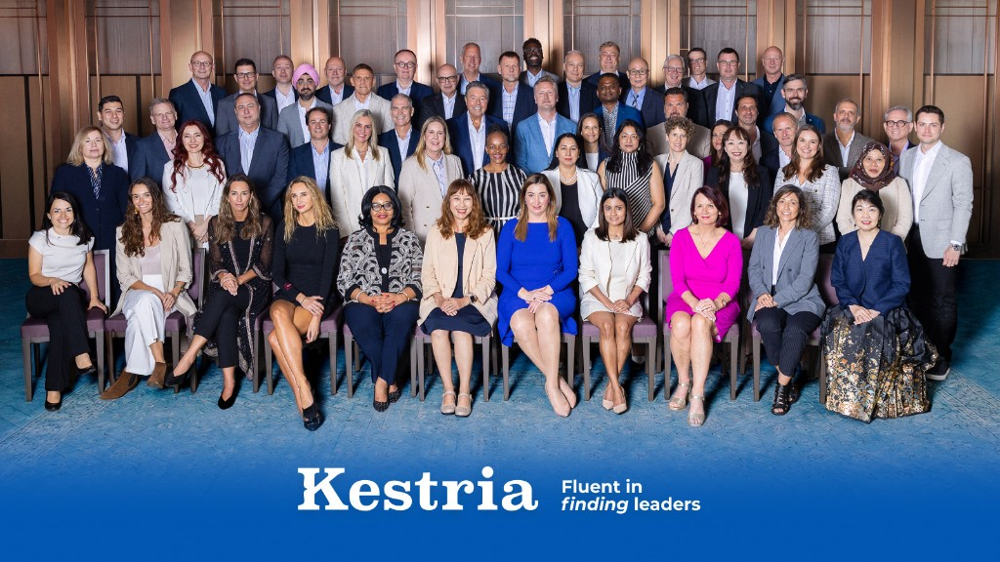

Conference sessions were rated strongly overall (8.4). The highest-rated were Dr. Ayesha Khanna's AI keynote (9.3) and 'The Authenticity Advantage' (9.2), with the AI content cited again and again as the most valuable and thought-provoking. The lowest-rated were the sponsor and tool sessions - Ezekia (7.3), Hogan (7.4) and Proactive Agility (7.5) - which some felt were repetitive year over year.
The dragon boat teambuilding was one of the most enjoyed parts of the conference (8.8), repeatedly described as great fun and a highlight for team spirit. The main suggestions were practical: warn participants in advance that they will get soaked, and reconsider the timing given the humid weather and an already packed schedule.
Andaz scored highly (9.2); dinners lower (6–7). Main feedback: venues too loud for conversation, menus too similar over three nights — quieter settings and more international options requested.
The most repeated request is to improve the dinners and venues (quieter, less repetitive, more international). Many also want the business development and Practice Group sessions rethought, as they feel repetitive year to year, and several found the sponsor-led presentations less engaging. The client event and the high-energy, authentic format were highlighted as successes worth keeping.
AI dominates the wish list - especially practical AI tools and workflows for business development and recruitment. Respondents also want more on future-proof leadership, how-to guidance for initiating cross-border business, market and economic insights, and the evolution of executive search toward strategic advisory.

Comments